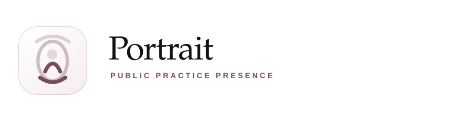
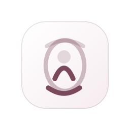
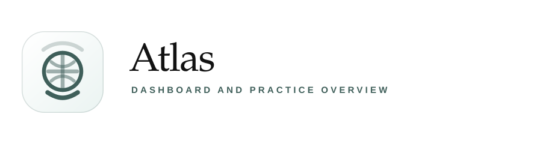

Your Dentist
Neutral umbrella brand for landing pages, public practice pages, and shared ecosystem navigation.
Master Brand
This keeps the public-facing domain calm and credible while still letting each product area own its own visual identity. The system below is designed so landing pages, doctor pages, and product surfaces can all feel related without forcing everything to lead with SmileScan.
Neutral umbrella brand for landing pages, public practice pages, and shared ecosystem navigation.
Visual intake and scan-led triage. The icon keeps the smile arc but adds a clearer scanning signal.
Editorial publishing, trust-building, and doctor authority. The open-book mark gives it its own voice without leaving the family.
Proposed replacement for the Tasks label. It feels more product-like, more premium, and more accurate to assignment, review, and handoff behavior.


Public doctor and practice presence. This turns the current profile section into a lasting label rather than a technical utility page.

Dashboard and practice overview. It frames the home view as a map of movement, signals, and current state.